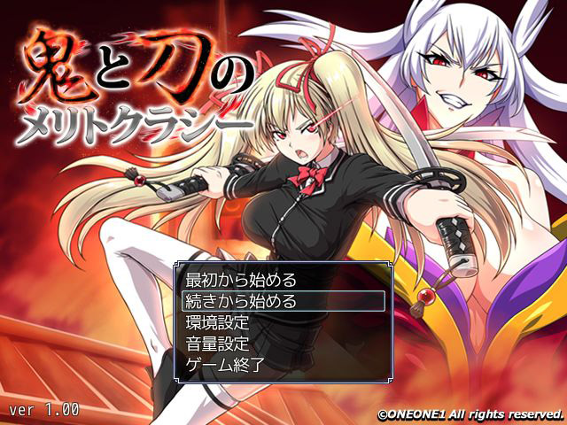

■タイトル画面時の操作
|
①最初から始める ゲームを最初から始めることが出来ます。 ②続きから始める 今までにセーブした場面からプレイ出来ます。 ③環境設定 ※下記に詳細があります。 ④音量設定 ※下記に詳細があります。 ⑤ゲーム終了 ゲームを終了してＷｉｎｄｏｗｓに戻ります。 |
■環境設定
|
①メッセージ表示速度 文章の表示速度を設定します。 ②自動改ページ待ち時間 オートモード時の待ち時間を設定します。 ③画像の演出 画像のフェード、シェイクなどの設定をします。 ④移動時の設定 移動時に通常の歩行かダッシュかを選べます。 ⑤Ｈアニメのスピード 戦闘時のＨアニメのスピードを調整します。 ⑥ＨありのＮＰＣの文字表示 ＨありのＮＰＣの頭上に文字を表示します。 ※表示があっても条件を満たしてなければＨは発生しません ⑦膣内断面図の表示 膣内断面図表示の有無を選びます。 ⑧膣内断面図アニメ 膣内断面図アニメの表示の有無を選びます。 膣内断面図表示がOFFの時はOFFになります。 ⑨１度見たＨシーンのスキップ １度見たＨシーンをスキップできるかどうかを設定します。 ⑩Ｈシーン後 結果ウインドウ Ｈシーン後の結果ウインドウの表示を設定します。 ⑪イベント戦闘時 自動敗北 勝敗で分岐があるイベントで自動敗北の設定をします。 ⑫ＮＰＣの殺害設定 ＮＰＣ殺害時に選択肢などの設定を行います。 ⑬出産シーンのスキップ 出産シーンのスキップを設定します。 |
■音量設定
|
①BGM BGMの音量を調整します ②VOICE ボイスの音量を調整します ③SE SEの音量を調整します ④HSE 射精音や挿入音などのSEの音量を調整します ⑤BGV バックグラウンドボイスの音量を調整します ⑥ME 戦闘終了後や宿屋で鳴る音の音量を調整します |